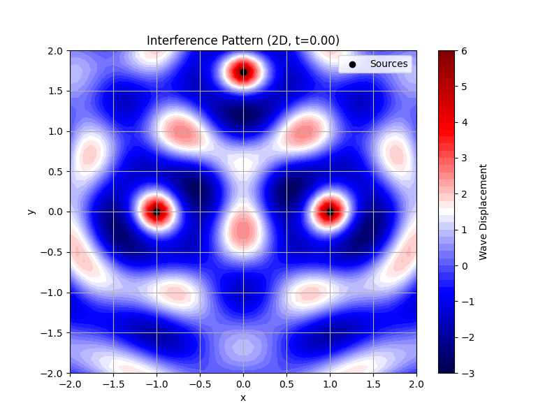
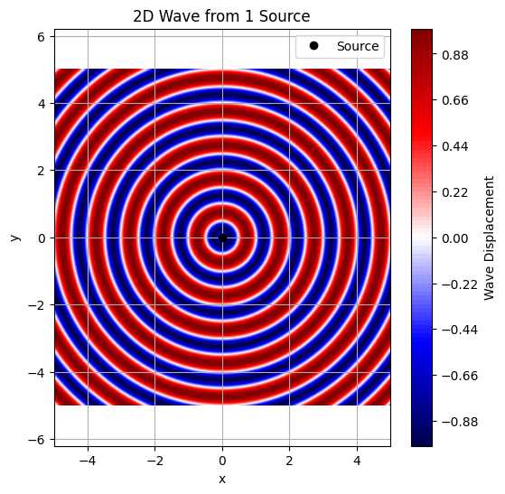
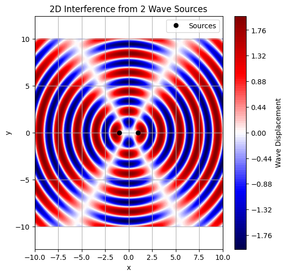
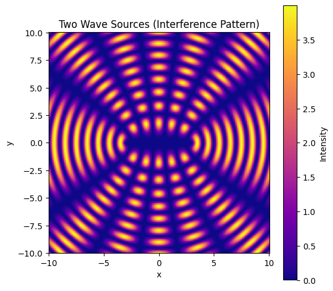

🌊 Interference Patterns of Circular Water Waves from Point Sources
🔹 Task Description
A circular wave on the water surface, emanating from a point source located at \((x_0, y_0)\), is described by the Single Disturbance Equation:
Where:
- \(\eta(x, y, t)\): Displacement of the water surface at point \((x, y)\) and time \(t\)
- \(A\): Amplitude of the wave
- \(k = \frac{2\pi}{\lambda}\): Wave number, with \(\lambda\) as the wavelength
- \(\omega = 2\pi f\): Angular frequency, with \(f\) as the wave frequency
- \(r = \sqrt{(x - x_0)^2 + (y - y_0)^2}\): Distance from source to the point \((x, y)\)
- \(\phi\): Initial phase of the wave
❓ Problem Statement
Your task is to analyze the interference patterns on the water surface caused by the superposition of waves emitted from point sources placed at the vertices of a regular polygon.
✅ Steps to Follow
1. Select a Regular Polygon
Choose a regular polygon: - Equilateral Triangle (3 vertices) - Square (4 vertices) - Regular Pentagon (5 vertices) - etc.
2. Position the Sources
Place wave sources at the vertices of the polygon. For a polygon centered at the origin: - Let the radius be \(R\) - The \(i^{th}\) vertex is at:
$$ (x_i, y_i) = \left(R\cos\left(\frac{2\pi i}{N}\right), R\sin\left(\frac{2\pi i}{N}\right)\right) $$
3. Write the Wave Equations
Each source emits a wave described by:
Where: - \(r_i = \sqrt{(x - x_i)^2 + (y - y_i)^2}\)
4. Superposition of Waves
The total displacement at a point \((x, y)\) and time \(t\) is given by:
Where: - \(N\) is the number of sources (polygon vertices)
🔬 Analyze Interference Patterns
- Compute \(\eta_{\text{sum}}(x, y, t)\) over a grid of \((x, y)\) points for a fixed time \(t\)
- Identify:
- Constructive interference: Wave amplitudes add up (bright/fringe regions)
- Destructive interference: Wave amplitudes cancel (dark/null regions)
📊 Visualization
- Use 2D heatmaps or 3D surface plots
- Plot \(\eta_{\text{sum}}(x, y, t)\) over a defined region
- Observe symmetrical patterns based on the chosen polygon
🧠 Optional Enhancements
- Animate \(\eta_{\text{sum}}(x, y, t)\) over time
- Explore effects of:
- Changing phase \(\phi\)
- Different frequencies \(\omega\)
- Different polygon types


import numpy as np
import matplotlib.pyplot as plt
from mpl_toolkits.mplot3d import Axes3D
from matplotlib import animation
from IPython.display import Image
from google.colab import files
# Parameters
A = 1.0 # Amplitude
k = 2 * np.pi / 1.0 # Wave number
omega = 1.0 # Angular frequency
phi = 0.0 # Initial phase
# Define triangle's vertices
sources = np.array([
[0, np.sqrt(3)], # Top vertex
[-1, 0], # Bottom-left
[1, 0] # Bottom-right
])
# Create a smaller grid
x = np.linspace(-2, 2, 50)
y = np.linspace(-2, 2, 50)
X, Y = np.meshgrid(x, y)
# Wave equation for a single source
def wave(X, Y, x0, y0, t):
r = np.sqrt((X - x0)**2 + (Y - y0)**2)
r = np.maximum(r, 1e-10) # Avoid division by zero
return (A / np.sqrt(r)) * np.cos(k * r - omega * t + phi)
# Compute total wave
def get_total_wave(t):
eta_total = np.zeros_like(X)
for x0, y0 in sources:
eta_total += wave(X, Y, x0, y0, t)
return eta_total
# 2D Plot and Animation
fig2d, ax2d = plt.subplots(figsize=(8, 6))
contour = ax2d.contourf(X, Y, get_total_wave(0), levels=50, cmap='seismic')
plt.colorbar(contour, ax=ax2d, label='Wave Displacement')
ax2d.scatter(sources[:, 0], sources[:, 1], c='black', marker='o', label='Sources')
ax2d.set_title('Interference Pattern (2D)')
ax2d.set_xlabel('x')
ax2d.set_ylabel('y')
ax2d.legend()
ax2d.grid(True)
def update_2d(frame):
t = frame * 0.05
ax2d.clear()
eta_total = get_total_wave(t)
contour = ax2d.contourf(X, Y, eta_total, levels=50, cmap='seismic')
ax2d.scatter(sources[:, 0], sources[:, 1], c='black', marker='o', label='Sources')
ax2d.set_title(f'Interference Pattern (2D, t={t:.2f})')
ax2d.set_xlabel('x')
ax2d.set_ylabel('y')
ax2d.legend()
ax2d.grid(True)
return [contour] # Return the QuadContourSet object as a list
ani2d = animation.FuncAnimation(fig2d, update_2d, frames=50, interval=50, blit=False)
writer2d = animation.PillowWriter(fps=10) # Use PillowWriter for GIF
ani2d.save('triangle_interference_2d.gif', writer=writer2d)
plt.close(fig2d)
# 3D Plot and Animation
fig3d = plt.figure(figsize=(8, 6))
ax3d = fig3d.add_subplot(111, projection='3d')
eta_total = get_total_wave(0)
surf = ax3d.plot_surface(X, Y, eta_total, cmap='seismic')
fig3d.colorbar(surf, ax=ax3d, label='Wave Displacement')
ax3d.set_title('Interference Pattern (3D)')
ax3d.set_xlabel('x')
ax3d.set_ylabel('y')
ax3d.set_zlabel('Wave Displacement')
def update_3d(frame):
t = frame * 0.05
ax3d.clear()
eta_total = get_total_wave(t)
surf = ax3d.plot_surface(X, Y, eta_total, cmap='seismic')
ax3d.set_title(f'Interference Pattern (3D, t={t:.2f})')
ax3d.set_xlabel('x')
ax3d.set_ylabel('y')
ax3d.set_zlabel('Wave Displacement')
return [surf]
ani3d = animation.FuncAnimation(fig3d, update_3d, frames=50, interval=50, blit=False)
writer3d = animation.PillowWriter(fps=10) # Use PillowWriter for GIF
ani3d.save('triangle_interference_3d.gif', writer=writer3d)
plt.close(fig3d)
# Display GIFs inline
print("2D Animation:")
display(Image(filename='triangle_interference_2d.gif'))
print("3D Animation:")
display(Image(filename='triangle_interference_3d.gif'))
# Optionally download GIFs
files.download('triangle_interference_2d.gif')
files.download('triangle_interference_3d.gif')

import numpy as np
import matplotlib.pyplot as plt
# Grid setup
x = np.linspace(-5, 5, 500)
y = np.linspace(-5, 5, 500)
X, Y = np.meshgrid(x, y)
# Wave parameters
wavelength = 1
k = 2 * np.pi / wavelength # wave number
f = 1 # frequency
omega = 2 * np.pi * f # angular frequency
t = 0.5 # snapshot time
# Distance from source at origin
r = np.sqrt(X**2 + Y**2)
# Wave function: sin(kr - ωt)
wave = np.sin(k * r - omega * t)
# Plotting
plt.figure(figsize=(6,6))
plt.contourf(X, Y, wave, levels=100, cmap='seismic')
plt.plot(0, 0, 'ko', label='Source')
plt.colorbar(label='Wave Displacement')
plt.title('2D Wave from 1 Source')
plt.xlabel('x')
plt.ylabel('y')
plt.legend()
plt.axis('equal')
plt.grid(True)
plt.show()

# Source positions
source1 = (-1, 0)
source2 = (1, 0)
# Distances from each source
r1 = np.sqrt((X - source1[0])**2 + (Y - source1[1])**2)
r2 = np.sqrt((X - source2[0])**2 + (Y - source2[1])**2)
# Wave functions
wave1 = np.sin(k * r1 - omega * t)
wave2 = np.sin(k * r2 - omega * t)
# Superposed wave
wave_total = wave1 + wave2
# Plotting
plt.figure(figsize=(6,6))
plt.contourf(X, Y, wave_total, levels=100, cmap='seismic')
plt.plot(*source1, 'ko')
plt.plot(*source2, 'ko', label='Sources')
plt.colorbar(label='Wave Displacement')
plt.title('2D Interference from 2 Wave Sources')
plt.xlabel('x')
plt.ylabel('y')
plt.legend()
plt.axis('equal')
plt.grid(True)
plt.show()

import numpy as np
import matplotlib.pyplot as plt
# Create a 2D grid
x = np.linspace(-10, 10, 500)
y = np.linspace(-10, 10, 500)
X, Y = np.meshgrid(x, y)
# Wave parameters
k = 2 * np.pi / 2 # wave number (wavelength = 2)
omega = 2 * np.pi / 1 # angular frequency (period = 1)
t = 0 # time snapshot
# Distances from two sources at (-3, 0) and (3, 0)
r1 = np.sqrt((X + 3)**2 + Y**2)
r2 = np.sqrt((X - 3)**2 + Y**2)
# Waves from both sources
wave1 = np.sin(k * r1 - omega * t)
wave2 = np.sin(k * r2 - omega * t)
# Superposition
total_wave = wave1 + wave2
# Plot
plt.figure(figsize=(6, 6))
plt.pcolormesh(X, Y, total_wave**2, shading='auto', cmap='plasma')
plt.colorbar(label='Intensity')
plt.title('Two Wave Sources (Interference Pattern)')
plt.xlabel('x')
plt.ylabel('y')
plt.gca().set_aspect('equal')
plt.show()